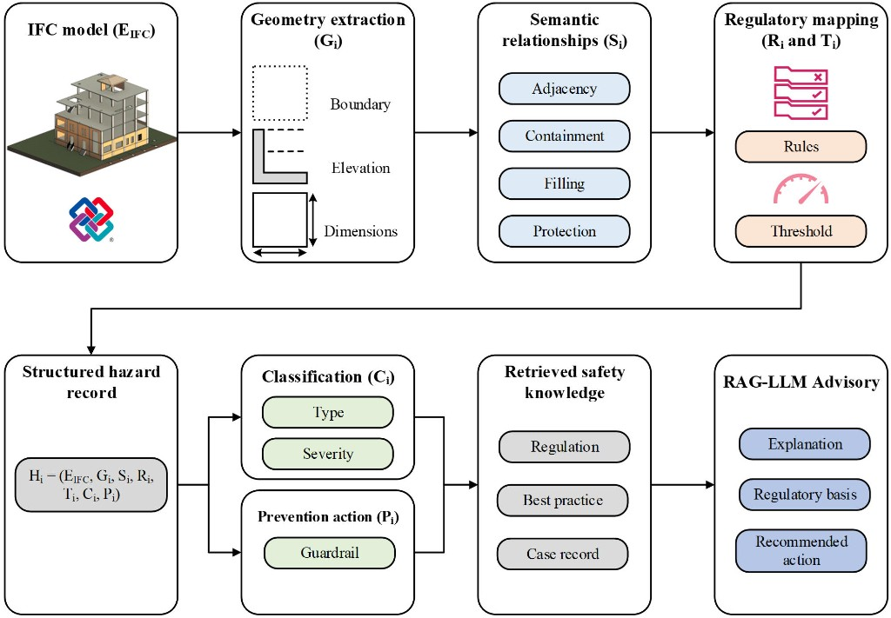
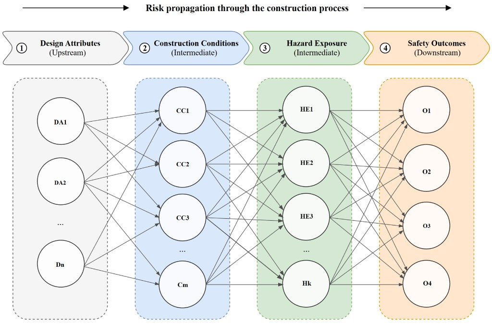
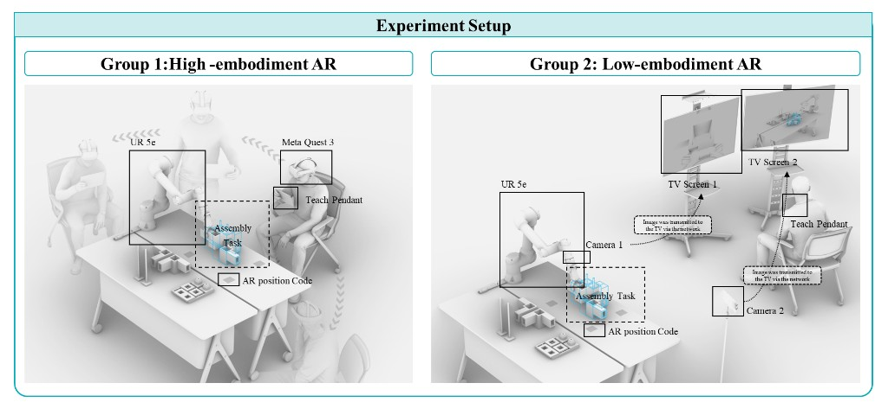

Construction Safety Risks
Globally, the construction industry is responsible for approximately 20% of all work-related fatalities, translating to around 60,000 worker deaths annually, representing the highest number and rate among all industries.


Global DfS Policy Landscape
Design for Safety (DfS) addresses construction hazards while drawings, methods, and work sequences can still be changed. Policy momentum grew from the 1990s as the UK and Europe embedded designer safety duties in regulation. The map compares how regions mandate or guide DfS in law and practice.
DfS Mandate and Fatality Rates
Construction remains one of the most hazardous industries worldwide. Comparing fatality rates across jurisdictions helps show why prevention-by-design matters, and whether legal DfS requirements correlate with lower deaths on site.
Orange bars mark economies where Design for Safety is mandated by law; dark bars mark places where DfS is encouraged but not legally required. Hover each row to read the rate per 100,000 workers.
Hong Kong and Taiwan sit among the highest rates in this sample, underscoring the urgency of embedding hazard reasoning earlier in design, not only at the gate of the construction site.
Research Agenda
Three research streams: hazard-aware review, risk-informed evaluation, and human-centric interaction—spanning engineering, policy, and scientific research respectively.
Hazard-Aware Review
Starting from IFC building models, we couple geometric features, semantic relationships, and regulatory rules to identify fall and related design-stage hazards, producing reviewable structured records and safety guidance.
The diagram outlines coupled geometric-semantic-regulatory reasoning: from the model and rules to hazard classification, retrieved knowledge, and RAG-LLM advisory.
Funding RGC ECS


Risk-informed Evaluation
Construction safety in Hong Kong remains serious, yet many accidents could be reduced through earlier design choices. DfS is widely discussed, but private-sector uptake stays voluntary—and evidence linking design to site risk remains limited.
This study analyses 542 accident cases, maps design–risk propagation, and simulates policy options—from regulation and structured review to guidance and training—to compare safety gains, implementation burden, and feasibility in Hong Kong.
Funding Application under review



Human-Centric Interaction
Augmented Reality (AR) has been widely explored as a means of supporting human-robot interaction for construction assembly. However, few studies have examined how different AR interaction designs affect users’ cognitive workload, task performance and learning experience in construction robotic assembly.
Drawing on embodied cognition theory and cognitive load theory, this study compares two embodiment-related AR interaction configurations: a proximal head-mounted display-based high-embodiment configuration and a remote screen-based low-embodiment configuration.
Funding URC TDG

